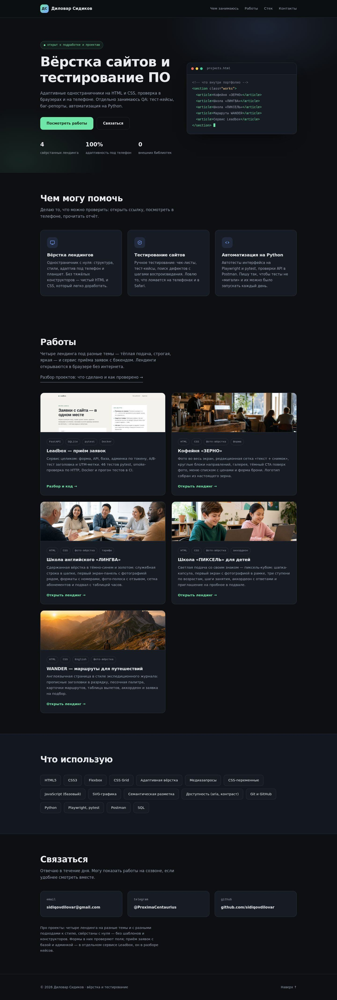
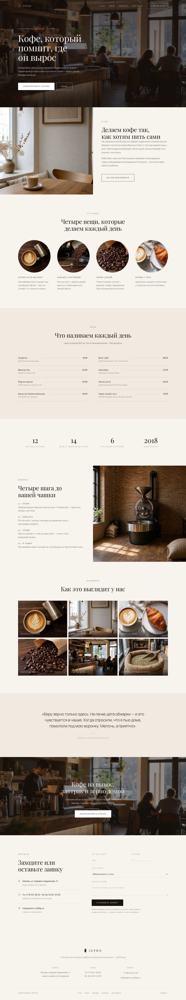
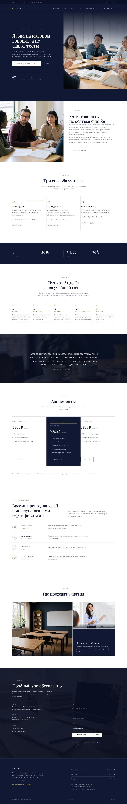
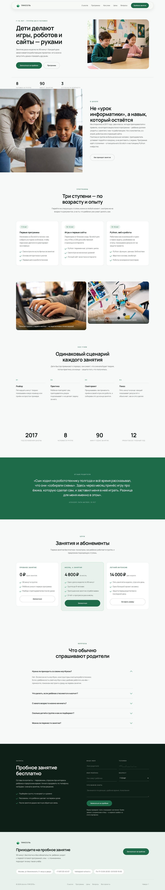
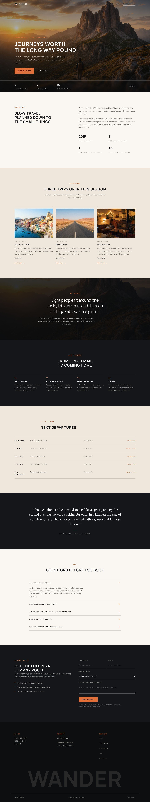
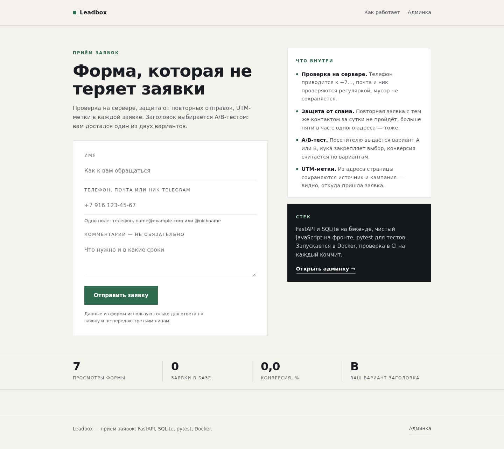
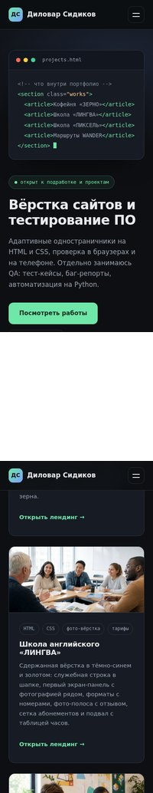
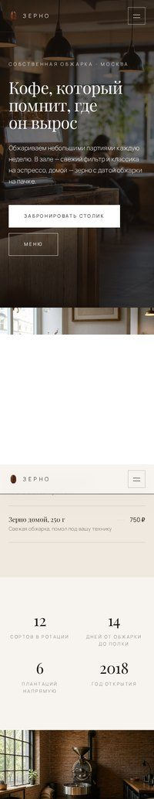
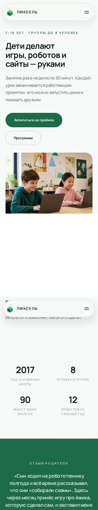
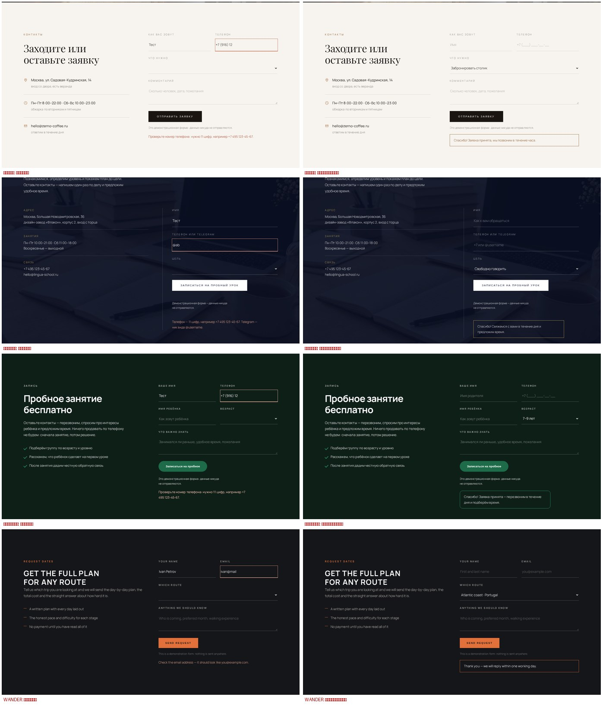

Работа 01
index.html
Страница-портфолио

снимок всей страницы1440 px · высота 3690 px
Работа 02
zerno-coffee.html
Кофейня «ЗЕРНО»

снимок всей страницы1440 px · высота 7736 px
На что посмотреть: отступы между блоками — должно быть просторно, текст не прилипает к краям; логотип в шапке — одно целое зерно на прозрачном фоне, он виден и на тёмной, и на светлой шапке; фотографии — без следов генерации (кривые руки, лишние детали машин).
Открыть живой файл
Работа 03
lingua-school.html
Школа английского «ЛИНГВА»

снимок всей страницы1440 px · высота 9007 px
Работа 04
pixel-kids.html
Школа «ПИКСЕЛЬ» для детей

снимок всей страницы1440 px · высота 7692 px
Работа 05
wander-travel.html
WANDER — маршруты для путешествий

снимок всей страницы1440 px · высота 7553 px
Работа 06
отдельный репозиторий · FastAPI
Leadbox — приём заявок с сайта

снимок всей страницы1440 px · высота 1283 px
Как это выглядит на телефоне
Для каждой страницы два фрагмента: первый экран и середина страницы. Все страницы проверены на ширине 390 px — горизонтальной прокрутки нет нигде.

Портфолио
ЗЕРНОЛИНГВА

ПИКСЕЛЬWANDER
Что проверено: ноль ошибок в консоли и ноль битых файлов на всех пяти страницах; горизонтальной прокрутки нет на ширинах 1440, 1280, 1024, 900, 768, 480 и 390 px; все изображения загружаются (ленивая загрузка ниже первого экрана); у каждой картинки есть подпись и размеры; контраст текста проверен по WCAG — ни одного значения ниже нормы; поля форм подсвечиваются при пустой отправке; меню, аккордеон и якоря работают. Шрифты подключены из папки
fonts/, внешних ссылок нет: страницы открываются без интернета.
Формы: что можно ввести
Поля ограничены по длине, телефон форматируется по ходу набора, а неверный формат не проходит дальше: страница подсвечивает поле и объясняет, что не так. Слева — состояние ошибки, справа — принятая заявка.

- Телефон у «Зерна» и «Пикселя»: 11 цифр, набор «89161234567» сам превращается в «+7 (916) 123-45-67», лишние цифры не допечатываются, буквы не вводятся, вставка из буфера чистится.
- У «Лингвы» то же поле принимает и номер, и ник в Telegram: «@my_nick» — да, «@ab» — нет.
- Почта в WANDER: «ivan@mail.ru» проходит, «ivan@mail», «ivan..petrov@mail.ru», «.ivan@mail.ru» — нет.
- Поверх лимитов стоит и проверка на сервере браузера: длинную строку нельзя вставить ни вручную, ни скриптом.